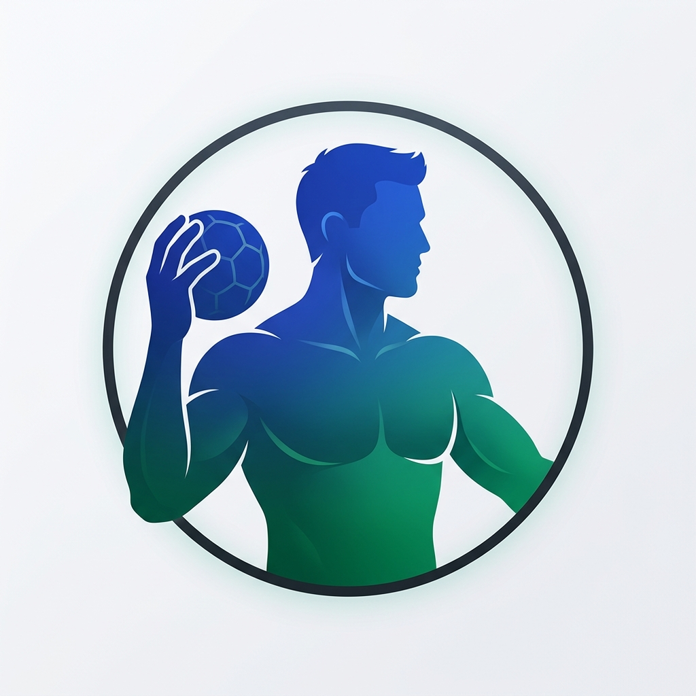

Insights Táticos Gerados Automaticamente
IA Analytics ADESP- Eficiência Ofensiva: ADESP converte 71.5% dos arremessos totais (143 gols em 200 tentativas), com taxa de 0.98 gols por posse de bola.
- Destaque xG: Lucas Reimer registra +4.2 xG Diff na temporada (33 gols reais contra 28.8 esperados), maior índice de conversão da liga.
- Velocidade de Transição: O time converte 79.4% dos contra-ataques de 1ª e 2ª onda, gerando 27 gols diretos em roubos de bola.
- Solidez Defensiva: Sistema defensivo 6:0 com flutuação concedeu apenas 22.0 gols/jogo, forçando 14 turnovers adversários por partida.
- Aproveitamento nos 7 Metros: 86.4% de eficácia em tiros de 7 metros (19 convertidos em 22 cobranças), liderados por André Luiz e Lucas Reimer.
- Disciplina Tática: Zero cartões vermelhos ou azuis em 300 minutos oficiais de jogo na temporada 2026.
30
Atletas Cadastrados
100% integrados24
Atletas Ativos / Aptos
Prontos para jogo28.6
Média de Gols / Partida
143 gols na temporada100%
Aproveitamento LIDTAP
5 vitórias consecutivasZonas de Finalização em Quadra & Eficiência de Arremesso
Distribuição e conversão oficial da ADESP/CDHU por setor tático (6m, 9m, Pontas, 7m e Contra-Ataque)Evolução de Gols por Partida (LIDTAP 2026)
Gols Pró vs. Gols SofridosGols por Setor
Volume OfensivoQuadro Geral de Eficiência dos Atletas
| # | Atleta | Posição | Idade | Jogos | Gols | Média Gols/J | Status Físico | Ações |
|---|

33
Gols Registrados
33 gols em 42 arremessos78.5%
Aproveitamento / Eficiência
Excelente Conversão28.8 xG
Gols Esperados (xG)
+4.2 xG Diff14
Assistências / Passes
Visão de Quadra7/8 (87.5%)
Tiros de 7 Metros
Especialista Penalidades9 Roubos / 3 Bloq
Ações Defensivas
Intensidade DefensivaRadar de Competências Técnicas & Táticas
Índice 0 a 100Baliza 3x3: Zonas de Finalização no Gol
33 Gols MarcadosMapa de calor da baliza de 3x2m com distribuição dos gols registrados por quadrante.
Histórico Recente de Jogos na Temporada
LIDTAP 2026Gráfico de Momentum & Oscilação do Placar
Saldo de Gols por Minuto (-5 a +7)Visualiza a dinâmica de virada e domínio do jogo. Valores acima de 0 representam liderança da ADESP/CDHU.
Linha do Tempo da Partida
Feed de EventosEstatísticas Detalhadas Head-to-Head & Súmula Digital
Relatório Oficial da Mesa| ADESP/CDHU | Indicador Tático | Adversário |
|---|
Relatório da Comissão Técnica & Análise Pós-Jogo
42 / 98
Defesas Totais
42.9% de Aproveitamento+8.4 xG
Gols Evitados Esperados
Performance Acima do Esperado15/34 (44.1%)
Defesas na Área de 6 Metros
Reflexo em Tiro Curto18/38 (47.3%)
Defesas em Tiros de 9 Metros
Leitura de Braço & Barreira7/16 (43.7%)
Defesas de Pontas (Ângulo Fechado)
Fechamento de Espaço2/10 (20.0%)
Defesas em Tiros de 7 Metros
Penalidades MáximasBaliza 3x3: Mapa de Defesas no Gol
42 Defesas RegistradasFrequência de defesas realizadas nos 9 quadrantes da baliza (3x2m).
Taxa de Defesa por Zona de Arremesso (%)
Setor TáticoRelatório Técnico de Preparação de Goleiros
Comissão Técnica ADESPPontos Fortes
Excelente envergadura e velocidade de membros superiores para fechar os ângulos superiores. Ótima reposição rápida com passe longo para transição de 1ª onda.
Oportunidades de Evolução
Treinamento intensivo de deslocamento lateral e fechamento em espacate para arremessos rasteiros e meia-altura vindos da ponta direita.
Sincronia com o Sistema 6:0
Com a barreira central fixa (Nillander e Bruno Teixeira), o goleiro assume prioritariamente o canto aberto, forçando arremessos de 9m contestados com sucesso de 47.3%.
Área Restrita de Saúde do Atleta (LGPD — Dados Sensíveis)
Informações médicas, laudos ortopédicos, histórico de cirurgias e prontuários fisioterápicos são classificados como dados estritamente sensíveis. O acesso a esta área é segregado e auditado, liberado exclusivamente para profissionais de saúde e fisioterapeutas com credencial médica ativa.
Mapa de Prontidão Física & Controle de Carga (PSE)
24 Atletas Aptos / 6 em Transição| Atleta | Posição | Status Clínico | Última Avaliação | Nível de Fadiga (0-10) | Recuperação Muscular | Observação Médica Autorizada |
|---|
Comparativo Técnico Entre Atletas
Selecione dois atletas para comparar o rendimento ofensivo, eficiência, minutagem e dados disciplinares para suporte em tomadas de decisões táticas.